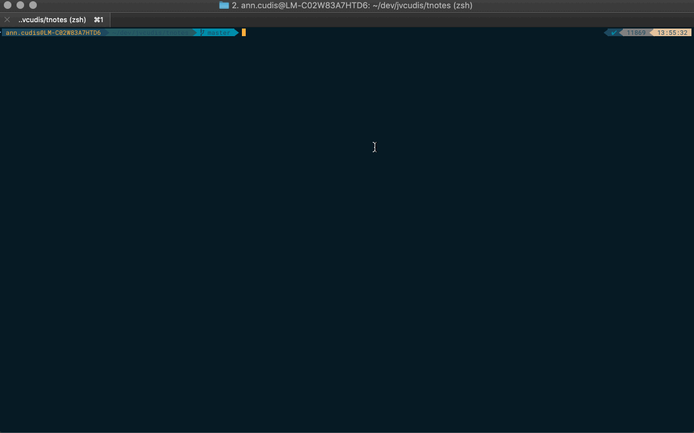

Alias for zshrc
When you get tired of typing git status and all the other commonly used git commands, then the thought of creating an alias for such commands would have come out of your mind. I’m using oh-my-zsh and below is how I setup my git aliases on my .zshrc file.
|
|
$1 and runs the function when the alias is used
Once you’ve saved your changes, you need to source the file so that the changes would be applied to the environment. If you want something cheeky aliases, (bullias)[checkout https://github.com/bullgit/bullias] 😃
